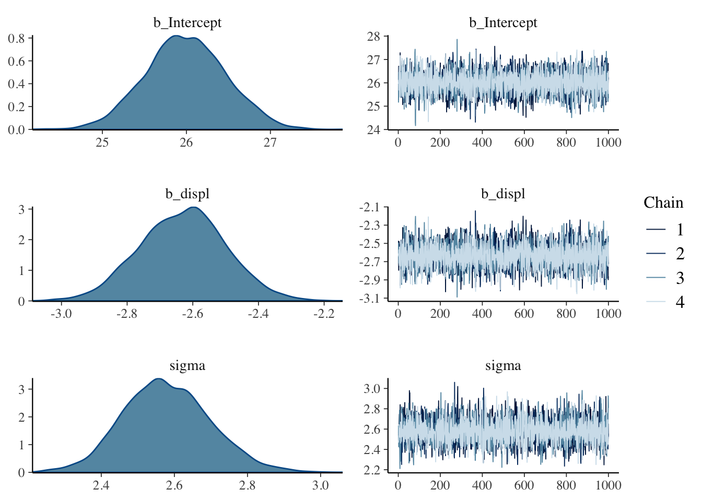

brmsパッケージを使って
準備
パッケージの読み込み
library(brms)## Loading required package: Rcpp## Loading required package: ggplot2## Loading 'brms' package (version 2.7.0). Useful instructions
## can be found by typing help('brms'). A more detailed introduction
## to the package is available through vignette('brms_overview').
## Run theme_set(theme_default()) to use the default bayesplot theme.library(tidyverse)## ─ Attaching packages ─────────────────────────────── tidyverse 1.2.1 ─## ✔ tibble 2.0.1 ✔ purrr 0.3.0
## ✔ tidyr 0.8.2 ✔ dplyr 0.8.0.1
## ✔ readr 1.3.1 ✔ stringr 1.4.0
## ✔ tibble 2.0.1 ✔ forcats 0.4.0## ─ Conflicts ───────────────────────────────── tidyverse_conflicts() ─
## ✖ dplyr::filter() masks stats::filter()
## ✖ dplyr::lag() masks stats::lag()データ
今回使うデータははRの持っているサンプルデータです。 車のメーカ(manufacture)，モデル(model)，排気量(displ)，製造年(year)，気筒数(cyl)，オートマ・マニュアルの別(trans), 駆動輪(drv)，市街地での燃費(cty)，高速道路での燃費(hwy)などからなるデータセットです。
data(mpg)
# 少しみてみる
head(mpg)| manufacturer | model | displ | year | cyl | trans | drv | cty | hwy | fl | class |
|---|---|---|---|---|---|---|---|---|---|---|
| audi | a4 | 1.8 | 1999 | 4 | auto(l5) | f | 18 | 29 | p | compact |
| audi | a4 | 1.8 | 1999 | 4 | manual(m5) | f | 21 | 29 | p | compact |
| audi | a4 | 2.0 | 2008 | 4 | manual(m6) | f | 20 | 31 | p | compact |
| audi | a4 | 2.0 | 2008 | 4 | auto(av) | f | 21 | 30 | p | compact |
| audi | a4 | 2.8 | 1999 | 6 | auto(l5) | f | 16 | 26 | p | compact |
| audi | a4 | 2.8 | 1999 | 6 | manual(m5) | f | 18 | 26 | p | compact |
可視化してみましょう
排気量と市街地での燃費の関係をグラフにします。
g <- ggplot(mpg,aes(x=displ,y=cty))+geom_point()
plot(g)
回帰線を追加します。
g <- g + geom_smooth(method='lm')
plot(g)最尤法による回帰
summary(lm(cty~displ,data=mpg))##
## Call:
## lm(formula = cty ~ displ, data = mpg)
##
## Residuals:
## Min 1Q Median 3Q Max
## -6.3109 -1.4695 -0.2566 1.1087 14.0064
##
## Coefficients:
## Estimate Std. Error t value Pr(>|t|)
## (Intercept) 25.9915 0.4821 53.91 <2e-16 ***
## displ -2.6305 0.1302 -20.20 <2e-16 ***
## ---
## Signif. codes: 0 '***' 0.001 '**' 0.01 '*' 0.05 '.' 0.1 ' ' 1
##
## Residual standard error: 2.567 on 232 degrees of freedom
## Multiple R-squared: 0.6376, Adjusted R-squared: 0.6361
## F-statistic: 408.2 on 1 and 232 DF, p-value: < 2.2e-16回帰線のベイズ推定
result.brm <- brm(cty~displ,data=mpg)## Compiling the C++ model## Start sampling##
## SAMPLING FOR MODEL '7e5af2e7cd64c4d926e4c21aec634789' NOW (CHAIN 1).
## Chain 1:
## Chain 1: Gradient evaluation took 5.1e-05 seconds
## Chain 1: 1000 transitions using 10 leapfrog steps per transition would take 0.51 seconds.
## Chain 1: Adjust your expectations accordingly!
## Chain 1:
## Chain 1:
## Chain 1: Iteration: 1 / 2000 [ 0%] (Warmup)
## Chain 1: Iteration: 200 / 2000 [ 10%] (Warmup)
## Chain 1: Iteration: 400 / 2000 [ 20%] (Warmup)
## Chain 1: Iteration: 600 / 2000 [ 30%] (Warmup)
## Chain 1: Iteration: 800 / 2000 [ 40%] (Warmup)
## Chain 1: Iteration: 1000 / 2000 [ 50%] (Warmup)
## Chain 1: Iteration: 1001 / 2000 [ 50%] (Sampling)
## Chain 1: Iteration: 1200 / 2000 [ 60%] (Sampling)
## Chain 1: Iteration: 1400 / 2000 [ 70%] (Sampling)
## Chain 1: Iteration: 1600 / 2000 [ 80%] (Sampling)
## Chain 1: Iteration: 1800 / 2000 [ 90%] (Sampling)
## Chain 1: Iteration: 2000 / 2000 [100%] (Sampling)
## Chain 1:
## Chain 1: Elapsed Time: 0.059267 seconds (Warm-up)
## Chain 1: 0.089747 seconds (Sampling)
## Chain 1: 0.149014 seconds (Total)
## Chain 1:
##
## SAMPLING FOR MODEL '7e5af2e7cd64c4d926e4c21aec634789' NOW (CHAIN 2).
## Chain 2:
## Chain 2: Gradient evaluation took 1.5e-05 seconds
## Chain 2: 1000 transitions using 10 leapfrog steps per transition would take 0.15 seconds.
## Chain 2: Adjust your expectations accordingly!
## Chain 2:
## Chain 2:
## Chain 2: Iteration: 1 / 2000 [ 0%] (Warmup)
## Chain 2: Iteration: 200 / 2000 [ 10%] (Warmup)
## Chain 2: Iteration: 400 / 2000 [ 20%] (Warmup)
## Chain 2: Iteration: 600 / 2000 [ 30%] (Warmup)
## Chain 2: Iteration: 800 / 2000 [ 40%] (Warmup)
## Chain 2: Iteration: 1000 / 2000 [ 50%] (Warmup)
## Chain 2: Iteration: 1001 / 2000 [ 50%] (Sampling)
## Chain 2: Iteration: 1200 / 2000 [ 60%] (Sampling)
## Chain 2: Iteration: 1400 / 2000 [ 70%] (Sampling)
## Chain 2: Iteration: 1600 / 2000 [ 80%] (Sampling)
## Chain 2: Iteration: 1800 / 2000 [ 90%] (Sampling)
## Chain 2: Iteration: 2000 / 2000 [100%] (Sampling)
## Chain 2:
## Chain 2: Elapsed Time: 0.060366 seconds (Warm-up)
## Chain 2: 0.060563 seconds (Sampling)
## Chain 2: 0.120929 seconds (Total)
## Chain 2:
##
## SAMPLING FOR MODEL '7e5af2e7cd64c4d926e4c21aec634789' NOW (CHAIN 3).
## Chain 3:
## Chain 3: Gradient evaluation took 1.3e-05 seconds
## Chain 3: 1000 transitions using 10 leapfrog steps per transition would take 0.13 seconds.
## Chain 3: Adjust your expectations accordingly!
## Chain 3:
## Chain 3:
## Chain 3: Iteration: 1 / 2000 [ 0%] (Warmup)
## Chain 3: Iteration: 200 / 2000 [ 10%] (Warmup)
## Chain 3: Iteration: 400 / 2000 [ 20%] (Warmup)
## Chain 3: Iteration: 600 / 2000 [ 30%] (Warmup)
## Chain 3: Iteration: 800 / 2000 [ 40%] (Warmup)
## Chain 3: Iteration: 1000 / 2000 [ 50%] (Warmup)
## Chain 3: Iteration: 1001 / 2000 [ 50%] (Sampling)
## Chain 3: Iteration: 1200 / 2000 [ 60%] (Sampling)
## Chain 3: Iteration: 1400 / 2000 [ 70%] (Sampling)
## Chain 3: Iteration: 1600 / 2000 [ 80%] (Sampling)
## Chain 3: Iteration: 1800 / 2000 [ 90%] (Sampling)
## Chain 3: Iteration: 2000 / 2000 [100%] (Sampling)
## Chain 3:
## Chain 3: Elapsed Time: 0.057019 seconds (Warm-up)
## Chain 3: 0.08655 seconds (Sampling)
## Chain 3: 0.143569 seconds (Total)
## Chain 3:
##
## SAMPLING FOR MODEL '7e5af2e7cd64c4d926e4c21aec634789' NOW (CHAIN 4).
## Chain 4:
## Chain 4: Gradient evaluation took 1.3e-05 seconds
## Chain 4: 1000 transitions using 10 leapfrog steps per transition would take 0.13 seconds.
## Chain 4: Adjust your expectations accordingly!
## Chain 4:
## Chain 4:
## Chain 4: Iteration: 1 / 2000 [ 0%] (Warmup)
## Chain 4: Iteration: 200 / 2000 [ 10%] (Warmup)
## Chain 4: Iteration: 400 / 2000 [ 20%] (Warmup)
## Chain 4: Iteration: 600 / 2000 [ 30%] (Warmup)
## Chain 4: Iteration: 800 / 2000 [ 40%] (Warmup)
## Chain 4: Iteration: 1000 / 2000 [ 50%] (Warmup)
## Chain 4: Iteration: 1001 / 2000 [ 50%] (Sampling)
## Chain 4: Iteration: 1200 / 2000 [ 60%] (Sampling)
## Chain 4: Iteration: 1400 / 2000 [ 70%] (Sampling)
## Chain 4: Iteration: 1600 / 2000 [ 80%] (Sampling)
## Chain 4: Iteration: 1800 / 2000 [ 90%] (Sampling)
## Chain 4: Iteration: 2000 / 2000 [100%] (Sampling)
## Chain 4:
## Chain 4: Elapsed Time: 0.057593 seconds (Warm-up)
## Chain 4: 0.067168 seconds (Sampling)
## Chain 4: 0.124761 seconds (Total)
## Chain 4:result.brm## Family: gaussian
## Links: mu = identity; sigma = identity
## Formula: cty ~ displ
## Data: mpg (Number of observations: 234)
## Samples: 4 chains, each with iter = 2000; warmup = 1000; thin = 1;
## total post-warmup samples = 4000
##
## Population-Level Effects:
## Estimate Est.Error l-95% CI u-95% CI Eff.Sample Rhat
## Intercept 26.00 0.48 25.06 26.94 4112 1.00
## displ -2.63 0.13 -2.89 -2.37 3993 1.00
##
## Family Specific Parameters:
## Estimate Est.Error l-95% CI u-95% CI Eff.Sample Rhat
## sigma 2.58 0.12 2.35 2.83 3765 1.00
##
## Samples were drawn using sampling(NUTS). For each parameter, Eff.Sample
## is a crude measure of effective sample size, and Rhat is the potential
## scale reduction factor on split chains (at convergence, Rhat = 1).結果のプロット
事後分布とトレースプロット
plot(result.brm)
MCMCサンプルをみてみる
# 取り出し -> データフレーム型へ -> 頭の10行だけ表示
rstan::extract(result.brm$fit) %>% data.frame %>% head(10)| b_Intercept | b | sigma | lp__ |
|---|---|---|---|
| 26.36722 | -2.752188 | 2.638981 | -557.3391 |
| 24.74516 | -2.371538 | 2.571377 | -560.7967 |
| 25.78244 | -2.552919 | 2.606055 | -556.9888 |
| 25.82456 | -2.593370 | 2.664000 | -557.0972 |
| 26.76528 | -2.841169 | 2.595154 | -558.0376 |
| 26.28992 | -2.723596 | 2.570466 | -556.9544 |
| 26.26239 | -2.588223 | 2.800122 | -561.0783 |
| 25.99399 | -2.642913 | 2.537078 | -556.7416 |
| 25.60591 | -2.614240 | 2.630171 | -558.6873 |
| 25.87900 | -2.628822 | 2.559532 | -556.8892 |
回帰線のグラフ
plot(marginal_effects(result.brm))
事後予測分布
pp_check(result.brm)## Using 10 posterior samples for ppc type 'dens_overlay' by default.
事後予測分布
predict(result.brm) %>% head(10)## Estimate Est.Error Q2.5 Q97.5
## [1,] 21.29312 2.593028 16.36681 26.38938
## [2,] 21.29794 2.599377 16.13745 26.44921
## [3,] 20.67186 2.582651 15.55602 25.79454
## [4,] 20.78511 2.608236 15.72148 25.80173
## [5,] 18.69809 2.614581 13.66677 23.94852
## [6,] 18.64398 2.619263 13.50991 23.72097
## [7,] 17.81250 2.612322 12.88889 22.94635
## [8,] 21.22561 2.572351 16.19734 26.19180
## [9,] 21.26269 2.576166 16.28129 26.24611
## [10,] 20.72178 2.630066 15.63516 25.90275分析に使ったstanコードも出力できる
result.brm$model## // generated with brms 2.7.0
## functions {
## }
## data {
## int<lower=1> N; // total number of observations
## vector[N] Y; // response variable
## int<lower=1> K; // number of population-level effects
## matrix[N, K] X; // population-level design matrix
## int prior_only; // should the likelihood be ignored?
## }
## transformed data {
## int Kc = K - 1;
## matrix[N, K - 1] Xc; // centered version of X
## vector[K - 1] means_X; // column means of X before centering
## for (i in 2:K) {
## means_X[i - 1] = mean(X[, i]);
## Xc[, i - 1] = X[, i] - means_X[i - 1];
## }
## }
## parameters {
## vector[Kc] b; // population-level effects
## real temp_Intercept; // temporary intercept
## real<lower=0> sigma; // residual SD
## }
## transformed parameters {
## }
## model {
## vector[N] mu = temp_Intercept + Xc * b;
## // priors including all constants
## target += student_t_lpdf(temp_Intercept | 3, 17, 10);
## target += student_t_lpdf(sigma | 3, 0, 10)
## - 1 * student_t_lccdf(0 | 3, 0, 10);
## // likelihood including all constants
## if (!prior_only) {
## target += normal_lpdf(Y | mu, sigma);
## }
## }
## generated quantities {
## // actual population-level intercept
## real b_Intercept = temp_Intercept - dot_product(means_X, b);
## }階層線形モデル
各群に回帰線を当てはめますが，その全体的な傾向も要約して表します。 群ごとの散らばりを分布から作られているもの，と考えるところがミソです。
ランダム切片モデル
切片が群ごとに異なる，というモデルを考えます。 今回は，15のメーカによって切片が違うとします。
result.hlm1 <- brm(cty~displ+(1|manufacturer),data=mpg)## Compiling the C++ model## Start sampling##
## SAMPLING FOR MODEL '9fac491b11fc784e76e04c51fb3d0c72' NOW (CHAIN 1).
## Chain 1:
## Chain 1: Gradient evaluation took 4.6e-05 seconds
## Chain 1: 1000 transitions using 10 leapfrog steps per transition would take 0.46 seconds.
## Chain 1: Adjust your expectations accordingly!
## Chain 1:
## Chain 1:
## Chain 1: Iteration: 1 / 2000 [ 0%] (Warmup)
## Chain 1: Iteration: 200 / 2000 [ 10%] (Warmup)
## Chain 1: Iteration: 400 / 2000 [ 20%] (Warmup)
## Chain 1: Iteration: 600 / 2000 [ 30%] (Warmup)
## Chain 1: Iteration: 800 / 2000 [ 40%] (Warmup)
## Chain 1: Iteration: 1000 / 2000 [ 50%] (Warmup)
## Chain 1: Iteration: 1001 / 2000 [ 50%] (Sampling)
## Chain 1: Iteration: 1200 / 2000 [ 60%] (Sampling)
## Chain 1: Iteration: 1400 / 2000 [ 70%] (Sampling)
## Chain 1: Iteration: 1600 / 2000 [ 80%] (Sampling)
## Chain 1: Iteration: 1800 / 2000 [ 90%] (Sampling)
## Chain 1: Iteration: 2000 / 2000 [100%] (Sampling)
## Chain 1:
## Chain 1: Elapsed Time: 0.291771 seconds (Warm-up)
## Chain 1: 0.256072 seconds (Sampling)
## Chain 1: 0.547843 seconds (Total)
## Chain 1:
##
## SAMPLING FOR MODEL '9fac491b11fc784e76e04c51fb3d0c72' NOW (CHAIN 2).
## Chain 2:
## Chain 2: Gradient evaluation took 1.7e-05 seconds
## Chain 2: 1000 transitions using 10 leapfrog steps per transition would take 0.17 seconds.
## Chain 2: Adjust your expectations accordingly!
## Chain 2:
## Chain 2:
## Chain 2: Iteration: 1 / 2000 [ 0%] (Warmup)
## Chain 2: Iteration: 200 / 2000 [ 10%] (Warmup)
## Chain 2: Iteration: 400 / 2000 [ 20%] (Warmup)
## Chain 2: Iteration: 600 / 2000 [ 30%] (Warmup)
## Chain 2: Iteration: 800 / 2000 [ 40%] (Warmup)
## Chain 2: Iteration: 1000 / 2000 [ 50%] (Warmup)
## Chain 2: Iteration: 1001 / 2000 [ 50%] (Sampling)
## Chain 2: Iteration: 1200 / 2000 [ 60%] (Sampling)
## Chain 2: Iteration: 1400 / 2000 [ 70%] (Sampling)
## Chain 2: Iteration: 1600 / 2000 [ 80%] (Sampling)
## Chain 2: Iteration: 1800 / 2000 [ 90%] (Sampling)
## Chain 2: Iteration: 2000 / 2000 [100%] (Sampling)
## Chain 2:
## Chain 2: Elapsed Time: 0.312334 seconds (Warm-up)
## Chain 2: 0.259774 seconds (Sampling)
## Chain 2: 0.572108 seconds (Total)
## Chain 2:
##
## SAMPLING FOR MODEL '9fac491b11fc784e76e04c51fb3d0c72' NOW (CHAIN 3).
## Chain 3:
## Chain 3: Gradient evaluation took 2e-05 seconds
## Chain 3: 1000 transitions using 10 leapfrog steps per transition would take 0.2 seconds.
## Chain 3: Adjust your expectations accordingly!
## Chain 3:
## Chain 3:
## Chain 3: Iteration: 1 / 2000 [ 0%] (Warmup)
## Chain 3: Iteration: 200 / 2000 [ 10%] (Warmup)
## Chain 3: Iteration: 400 / 2000 [ 20%] (Warmup)
## Chain 3: Iteration: 600 / 2000 [ 30%] (Warmup)
## Chain 3: Iteration: 800 / 2000 [ 40%] (Warmup)
## Chain 3: Iteration: 1000 / 2000 [ 50%] (Warmup)
## Chain 3: Iteration: 1001 / 2000 [ 50%] (Sampling)
## Chain 3: Iteration: 1200 / 2000 [ 60%] (Sampling)
## Chain 3: Iteration: 1400 / 2000 [ 70%] (Sampling)
## Chain 3: Iteration: 1600 / 2000 [ 80%] (Sampling)
## Chain 3: Iteration: 1800 / 2000 [ 90%] (Sampling)
## Chain 3: Iteration: 2000 / 2000 [100%] (Sampling)
## Chain 3:
## Chain 3: Elapsed Time: 0.31172 seconds (Warm-up)
## Chain 3: 0.255036 seconds (Sampling)
## Chain 3: 0.566756 seconds (Total)
## Chain 3:
##
## SAMPLING FOR MODEL '9fac491b11fc784e76e04c51fb3d0c72' NOW (CHAIN 4).
## Chain 4:
## Chain 4: Gradient evaluation took 1.9e-05 seconds
## Chain 4: 1000 transitions using 10 leapfrog steps per transition would take 0.19 seconds.
## Chain 4: Adjust your expectations accordingly!
## Chain 4:
## Chain 4:
## Chain 4: Iteration: 1 / 2000 [ 0%] (Warmup)
## Chain 4: Iteration: 200 / 2000 [ 10%] (Warmup)
## Chain 4: Iteration: 400 / 2000 [ 20%] (Warmup)
## Chain 4: Iteration: 600 / 2000 [ 30%] (Warmup)
## Chain 4: Iteration: 800 / 2000 [ 40%] (Warmup)
## Chain 4: Iteration: 1000 / 2000 [ 50%] (Warmup)
## Chain 4: Iteration: 1001 / 2000 [ 50%] (Sampling)
## Chain 4: Iteration: 1200 / 2000 [ 60%] (Sampling)
## Chain 4: Iteration: 1400 / 2000 [ 70%] (Sampling)
## Chain 4: Iteration: 1600 / 2000 [ 80%] (Sampling)
## Chain 4: Iteration: 1800 / 2000 [ 90%] (Sampling)
## Chain 4: Iteration: 2000 / 2000 [100%] (Sampling)
## Chain 4:
## Chain 4: Elapsed Time: 0.302916 seconds (Warm-up)
## Chain 4: 0.240553 seconds (Sampling)
## Chain 4: 0.543469 seconds (Total)
## Chain 4:結果は次の通り。
# 結果（要約）
result.hlm1## Family: gaussian
## Links: mu = identity; sigma = identity
## Formula: cty ~ displ + (1 | manufacturer)
## Data: mpg (Number of observations: 234)
## Samples: 4 chains, each with iter = 2000; warmup = 1000; thin = 1;
## total post-warmup samples = 4000
##
## Group-Level Effects:
## ~manufacturer (Number of levels: 15)
## Estimate Est.Error l-95% CI u-95% CI Eff.Sample Rhat
## sd(Intercept) 1.52 0.40 0.88 2.44 1246 1.00
##
## Population-Level Effects:
## Estimate Est.Error l-95% CI u-95% CI Eff.Sample Rhat
## Intercept 25.48 0.78 23.89 26.95 1785 1.00
## displ -2.49 0.18 -2.85 -2.13 3065 1.00
##
## Family Specific Parameters:
## Estimate Est.Error l-95% CI u-95% CI Eff.Sample Rhat
## sigma 2.29 0.11 2.08 2.52 4621 1.00
##
## Samples were drawn using sampling(NUTS). For each parameter, Eff.Sample
## is a crude measure of effective sample size, and Rhat is the potential
## scale reduction factor on split chains (at convergence, Rhat = 1).# 推定値
result.hlm1$fit## Inference for Stan model: 9fac491b11fc784e76e04c51fb3d0c72.
## 4 chains, each with iter=2000; warmup=1000; thin=1;
## post-warmup draws per chain=1000, total post-warmup draws=4000.
##
## mean se_mean sd 2.5% 25%
## b_Intercept 25.48 0.02 0.78 23.89 24.97
## b_displ -2.49 0.00 0.18 -2.85 -2.61
## sd_manufacturer__Intercept 1.52 0.01 0.40 0.88 1.25
## sigma 2.29 0.00 0.11 2.08 2.21
## r_manufacturer[audi,Intercept] -1.33 0.02 0.66 -2.62 -1.77
## r_manufacturer[chevrolet,Intercept] 1.87 0.02 0.69 0.56 1.41
## r_manufacturer[dodge,Intercept] -1.34 0.01 0.58 -2.50 -1.71
## r_manufacturer[ford,Intercept] -0.16 0.01 0.62 -1.38 -0.56
## r_manufacturer[honda,Intercept] 2.51 0.02 0.87 0.84 1.89
## r_manufacturer[hyundai,Intercept] -0.65 0.02 0.70 -2.07 -1.12
## r_manufacturer[jeep,Intercept] -0.44 0.01 0.82 -1.99 -0.99
## r_manufacturer[land.rover,Intercept] -2.01 0.02 1.03 -4.20 -2.67
## r_manufacturer[lincoln,Intercept] -0.37 0.02 1.04 -2.43 -1.06
## r_manufacturer[mercury,Intercept] -0.78 0.02 0.98 -2.74 -1.43
## r_manufacturer[nissan,Intercept] 0.62 0.01 0.71 -0.78 0.16
## r_manufacturer[pontiac,Intercept] 0.92 0.02 0.90 -0.85 0.32
## r_manufacturer[subaru,Intercept] -0.05 0.02 0.70 -1.44 -0.52
## r_manufacturer[toyota,Intercept] 0.37 0.01 0.57 -0.72 -0.01
## r_manufacturer[volkswagen,Intercept] 0.98 0.02 0.64 -0.23 0.55
## lp__ -552.82 0.14 4.31 -562.60 -555.43
## 50% 75% 97.5% n_eff Rhat
## b_Intercept 25.51 26.02 26.95 1785 1
## b_displ -2.50 -2.38 -2.13 3065 1
## sd_manufacturer__Intercept 1.47 1.74 2.44 1246 1
## sigma 2.29 2.36 2.52 4621 1
## r_manufacturer[audi,Intercept] -1.31 -0.90 -0.06 1861 1
## r_manufacturer[chevrolet,Intercept] 1.86 2.33 3.23 2018 1
## r_manufacturer[dodge,Intercept] -1.34 -0.97 -0.22 1639 1
## r_manufacturer[ford,Intercept] -0.15 0.23 1.05 1869 1
## r_manufacturer[honda,Intercept] 2.49 3.08 4.27 2421 1
## r_manufacturer[hyundai,Intercept] -0.64 -0.17 0.74 2103 1
## r_manufacturer[jeep,Intercept] -0.44 0.10 1.19 2990 1
## r_manufacturer[land.rover,Intercept] -1.97 -1.30 -0.09 2656 1
## r_manufacturer[lincoln,Intercept] -0.35 0.34 1.64 4345 1
## r_manufacturer[mercury,Intercept] -0.76 -0.11 1.08 4020 1
## r_manufacturer[nissan,Intercept] 0.62 1.07 2.01 2360 1
## r_manufacturer[pontiac,Intercept] 0.90 1.52 2.73 3089 1
## r_manufacturer[subaru,Intercept] -0.04 0.41 1.29 2060 1
## r_manufacturer[toyota,Intercept] 0.35 0.74 1.53 1642 1
## r_manufacturer[volkswagen,Intercept] 0.96 1.42 2.23 1635 1
## lp__ -552.39 -549.80 -545.58 898 1
##
## Samples were drawn using NUTS(diag_e) at Fri Mar 1 15:07:44 2019.
## For each parameter, n_eff is a crude measure of effective sample size,
## and Rhat is the potential scale reduction factor on split chains (at
## convergence, Rhat=1).# 作図
mpg %>%
cbind(fitted(result.hlm1)) %>%
select(cty, displ, manufacturer, y_hat = Estimate) %>%
ggplot(aes(displ, y_hat, color = manufacturer)) +
geom_smooth(method = "lm", se = FALSE) +
geom_point(aes(y = cty)) + ylab("cty")
ランダム係数モデル
result.hlm2 <- brm(cty~displ+(displ|manufacturer),data=mpg)## Compiling the C++ model## Start sampling##
## SAMPLING FOR MODEL '53e4e9542f8ef009be512e8b26497a07' NOW (CHAIN 1).
## Chain 1:
## Chain 1: Gradient evaluation took 6.7e-05 seconds
## Chain 1: 1000 transitions using 10 leapfrog steps per transition would take 0.67 seconds.
## Chain 1: Adjust your expectations accordingly!
## Chain 1:
## Chain 1:
## Chain 1: Iteration: 1 / 2000 [ 0%] (Warmup)
## Chain 1: Iteration: 200 / 2000 [ 10%] (Warmup)
## Chain 1: Iteration: 400 / 2000 [ 20%] (Warmup)
## Chain 1: Iteration: 600 / 2000 [ 30%] (Warmup)
## Chain 1: Iteration: 800 / 2000 [ 40%] (Warmup)
## Chain 1: Iteration: 1000 / 2000 [ 50%] (Warmup)
## Chain 1: Iteration: 1001 / 2000 [ 50%] (Sampling)
## Chain 1: Iteration: 1200 / 2000 [ 60%] (Sampling)
## Chain 1: Iteration: 1400 / 2000 [ 70%] (Sampling)
## Chain 1: Iteration: 1600 / 2000 [ 80%] (Sampling)
## Chain 1: Iteration: 1800 / 2000 [ 90%] (Sampling)
## Chain 1: Iteration: 2000 / 2000 [100%] (Sampling)
## Chain 1:
## Chain 1: Elapsed Time: 1.26713 seconds (Warm-up)
## Chain 1: 1.27353 seconds (Sampling)
## Chain 1: 2.54066 seconds (Total)
## Chain 1:
##
## SAMPLING FOR MODEL '53e4e9542f8ef009be512e8b26497a07' NOW (CHAIN 2).
## Chain 2:
## Chain 2: Gradient evaluation took 3e-05 seconds
## Chain 2: 1000 transitions using 10 leapfrog steps per transition would take 0.3 seconds.
## Chain 2: Adjust your expectations accordingly!
## Chain 2:
## Chain 2:
## Chain 2: Iteration: 1 / 2000 [ 0%] (Warmup)
## Chain 2: Iteration: 200 / 2000 [ 10%] (Warmup)
## Chain 2: Iteration: 400 / 2000 [ 20%] (Warmup)
## Chain 2: Iteration: 600 / 2000 [ 30%] (Warmup)
## Chain 2: Iteration: 800 / 2000 [ 40%] (Warmup)
## Chain 2: Iteration: 1000 / 2000 [ 50%] (Warmup)
## Chain 2: Iteration: 1001 / 2000 [ 50%] (Sampling)
## Chain 2: Iteration: 1200 / 2000 [ 60%] (Sampling)
## Chain 2: Iteration: 1400 / 2000 [ 70%] (Sampling)
## Chain 2: Iteration: 1600 / 2000 [ 80%] (Sampling)
## Chain 2: Iteration: 1800 / 2000 [ 90%] (Sampling)
## Chain 2: Iteration: 2000 / 2000 [100%] (Sampling)
## Chain 2:
## Chain 2: Elapsed Time: 1.31955 seconds (Warm-up)
## Chain 2: 1.23481 seconds (Sampling)
## Chain 2: 2.55436 seconds (Total)
## Chain 2:
##
## SAMPLING FOR MODEL '53e4e9542f8ef009be512e8b26497a07' NOW (CHAIN 3).
## Chain 3:
## Chain 3: Gradient evaluation took 2.8e-05 seconds
## Chain 3: 1000 transitions using 10 leapfrog steps per transition would take 0.28 seconds.
## Chain 3: Adjust your expectations accordingly!
## Chain 3:
## Chain 3:
## Chain 3: Iteration: 1 / 2000 [ 0%] (Warmup)
## Chain 3: Iteration: 200 / 2000 [ 10%] (Warmup)
## Chain 3: Iteration: 400 / 2000 [ 20%] (Warmup)
## Chain 3: Iteration: 600 / 2000 [ 30%] (Warmup)
## Chain 3: Iteration: 800 / 2000 [ 40%] (Warmup)
## Chain 3: Iteration: 1000 / 2000 [ 50%] (Warmup)
## Chain 3: Iteration: 1001 / 2000 [ 50%] (Sampling)
## Chain 3: Iteration: 1200 / 2000 [ 60%] (Sampling)
## Chain 3: Iteration: 1400 / 2000 [ 70%] (Sampling)
## Chain 3: Iteration: 1600 / 2000 [ 80%] (Sampling)
## Chain 3: Iteration: 1800 / 2000 [ 90%] (Sampling)
## Chain 3: Iteration: 2000 / 2000 [100%] (Sampling)
## Chain 3:
## Chain 3: Elapsed Time: 1.35011 seconds (Warm-up)
## Chain 3: 1.22405 seconds (Sampling)
## Chain 3: 2.57416 seconds (Total)
## Chain 3:
##
## SAMPLING FOR MODEL '53e4e9542f8ef009be512e8b26497a07' NOW (CHAIN 4).
## Chain 4:
## Chain 4: Gradient evaluation took 6e-05 seconds
## Chain 4: 1000 transitions using 10 leapfrog steps per transition would take 0.6 seconds.
## Chain 4: Adjust your expectations accordingly!
## Chain 4:
## Chain 4:
## Chain 4: Iteration: 1 / 2000 [ 0%] (Warmup)
## Chain 4: Iteration: 200 / 2000 [ 10%] (Warmup)
## Chain 4: Iteration: 400 / 2000 [ 20%] (Warmup)
## Chain 4: Iteration: 600 / 2000 [ 30%] (Warmup)
## Chain 4: Iteration: 800 / 2000 [ 40%] (Warmup)
## Chain 4: Iteration: 1000 / 2000 [ 50%] (Warmup)
## Chain 4: Iteration: 1001 / 2000 [ 50%] (Sampling)
## Chain 4: Iteration: 1200 / 2000 [ 60%] (Sampling)
## Chain 4: Iteration: 1400 / 2000 [ 70%] (Sampling)
## Chain 4: Iteration: 1600 / 2000 [ 80%] (Sampling)
## Chain 4: Iteration: 1800 / 2000 [ 90%] (Sampling)
## Chain 4: Iteration: 2000 / 2000 [100%] (Sampling)
## Chain 4:
## Chain 4: Elapsed Time: 1.6646 seconds (Warm-up)
## Chain 4: 1.28142 seconds (Sampling)
## Chain 4: 2.94602 seconds (Total)
## Chain 4:## Warning: There were 2 divergent transitions after warmup. Increasing adapt_delta above 0.8 may help. See
## http://mc-stan.org/misc/warnings.html#divergent-transitions-after-warmup## Warning: Examine the pairs() plot to diagnose sampling problems結果は次の通り。
# 結果（要約）
result.hlm2## Warning: There were 2 divergent transitions after warmup. Increasing adapt_delta above 0.8 may help.
## See http://mc-stan.org/misc/warnings.html#divergent-transitions-after-warmup## Family: gaussian
## Links: mu = identity; sigma = identity
## Formula: cty ~ displ + (displ | manufacturer)
## Data: mpg (Number of observations: 234)
## Samples: 4 chains, each with iter = 2000; warmup = 1000; thin = 1;
## total post-warmup samples = 4000
##
## Group-Level Effects:
## ~manufacturer (Number of levels: 15)
## Estimate Est.Error l-95% CI u-95% CI Eff.Sample Rhat
## sd(Intercept) 3.25 1.05 1.52 5.65 1154 1.00
## sd(displ) 0.89 0.33 0.37 1.66 985 1.01
## cor(Intercept,displ) -0.90 0.14 -0.99 -0.52 894 1.00
##
## Population-Level Effects:
## Estimate Est.Error l-95% CI u-95% CI Eff.Sample Rhat
## Intercept 25.75 1.18 23.29 28.14 1970 1.00
## displ -2.66 0.33 -3.33 -2.03 1784 1.00
##
## Family Specific Parameters:
## Estimate Est.Error l-95% CI u-95% CI Eff.Sample Rhat
## sigma 2.20 0.11 2.00 2.42 4284 1.00
##
## Samples were drawn using sampling(NUTS). For each parameter, Eff.Sample
## is a crude measure of effective sample size, and Rhat is the potential
## scale reduction factor on split chains (at convergence, Rhat = 1).# 推定値
result.hlm2$fit## Inference for Stan model: 53e4e9542f8ef009be512e8b26497a07.
## 4 chains, each with iter=2000; warmup=1000; thin=1;
## post-warmup draws per chain=1000, total post-warmup draws=4000.
##
## mean se_mean sd 2.5% 25%
## b_Intercept 25.75 0.03 1.18 23.29 25.02
## b_displ -2.66 0.01 0.33 -3.33 -2.87
## sd_manufacturer__Intercept 3.25 0.03 1.05 1.52 2.54
## sd_manufacturer__displ 0.89 0.01 0.33 0.37 0.66
## cor_manufacturer__Intercept__displ -0.90 0.00 0.14 -0.99 -0.97
## sigma 2.20 0.00 0.11 2.00 2.13
## r_manufacturer[audi,Intercept] -2.77 0.04 1.86 -6.76 -3.94
## r_manufacturer[chevrolet,Intercept] -2.74 0.05 2.05 -6.77 -4.11
## r_manufacturer[dodge,Intercept] -2.13 0.04 1.84 -5.75 -3.33
## r_manufacturer[ford,Intercept] -0.43 0.04 2.31 -5.11 -1.90
## r_manufacturer[honda,Intercept] 4.55 0.04 1.92 0.98 3.24
## r_manufacturer[hyundai,Intercept] -1.27 0.04 2.01 -5.58 -2.49
## r_manufacturer[jeep,Intercept] -1.51 0.04 2.34 -6.41 -2.98
## r_manufacturer[land.rover,Intercept] 0.53 0.08 3.59 -6.53 -1.77
## r_manufacturer[lincoln,Intercept] -0.10 0.04 2.79 -5.76 -1.83
## r_manufacturer[mercury,Intercept] -0.50 0.05 2.90 -6.43 -2.27
## r_manufacturer[nissan,Intercept] 1.55 0.04 2.11 -2.59 0.18
## r_manufacturer[pontiac,Intercept] -1.69 0.07 3.10 -8.31 -3.55
## r_manufacturer[subaru,Intercept] 0.15 0.04 2.11 -4.08 -1.20
## r_manufacturer[toyota,Intercept] 2.65 0.03 1.58 -0.31 1.54
## r_manufacturer[volkswagen,Intercept] 3.44 0.04 1.88 0.10 2.11
## r_manufacturer[audi,displ] 0.62 0.01 0.62 -0.52 0.21
## r_manufacturer[chevrolet,displ] 1.04 0.01 0.47 0.15 0.71
## r_manufacturer[dodge,displ] 0.30 0.01 0.45 -0.55 0.00
## r_manufacturer[ford,displ] 0.16 0.01 0.55 -0.89 -0.19
## r_manufacturer[honda,displ] -1.03 0.02 0.76 -2.56 -1.53
## r_manufacturer[hyundai,displ] 0.30 0.01 0.69 -1.03 -0.15
## r_manufacturer[jeep,displ] 0.36 0.01 0.57 -0.71 -0.03
## r_manufacturer[land.rover,displ] -0.51 0.02 0.88 -2.38 -1.05
## r_manufacturer[lincoln,displ] 0.01 0.01 0.63 -1.21 -0.40
## r_manufacturer[mercury,displ] 0.03 0.01 0.72 -1.39 -0.42
## r_manufacturer[nissan,displ] -0.24 0.01 0.60 -1.42 -0.62
## r_manufacturer[pontiac,displ] 0.72 0.02 0.82 -0.69 0.16
## r_manufacturer[subaru,displ] -0.03 0.01 0.72 -1.50 -0.46
## r_manufacturer[toyota,displ] -0.69 0.01 0.45 -1.63 -0.99
## r_manufacturer[volkswagen,displ] -1.00 0.01 0.67 -2.48 -1.41
## lp__ -569.79 0.17 5.66 -581.67 -573.34
## 50% 75% 97.5% n_eff Rhat
## b_Intercept 25.76 26.50 28.14 1970 1.00
## b_displ -2.66 -2.45 -2.03 1784 1.00
## sd_manufacturer__Intercept 3.13 3.83 5.65 1154 1.00
## sd_manufacturer__displ 0.85 1.07 1.66 985 1.01
## cor_manufacturer__Intercept__displ -0.94 -0.88 -0.52 894 1.00
## sigma 2.19 2.27 2.42 4284 1.00
## r_manufacturer[audi,Intercept] -2.67 -1.53 0.65 2401 1.00
## r_manufacturer[chevrolet,Intercept] -2.81 -1.30 1.21 1799 1.00
## r_manufacturer[dodge,Intercept] -2.10 -0.89 1.44 2717 1.00
## r_manufacturer[ford,Intercept] -0.37 1.04 4.07 3360 1.00
## r_manufacturer[honda,Intercept] 4.49 5.82 8.48 2284 1.00
## r_manufacturer[hyundai,Intercept] -1.20 0.07 2.56 3115 1.00
## r_manufacturer[jeep,Intercept] -1.41 0.04 2.95 3452 1.00
## r_manufacturer[land.rover,Intercept] 0.39 2.78 7.89 2128 1.00
## r_manufacturer[lincoln,Intercept] -0.10 1.66 5.38 3996 1.00
## r_manufacturer[mercury,Intercept] -0.48 1.35 5.18 3866 1.00
## r_manufacturer[nissan,Intercept] 1.49 2.88 5.89 3434 1.00
## r_manufacturer[pontiac,Intercept] -1.42 0.36 3.82 2199 1.00
## r_manufacturer[subaru,Intercept] 0.04 1.50 4.49 3150 1.00
## r_manufacturer[toyota,Intercept] 2.61 3.68 5.87 2516 1.00
## r_manufacturer[volkswagen,Intercept] 3.34 4.65 7.36 2133 1.00
## r_manufacturer[audi,displ] 0.60 1.00 1.94 2116 1.00
## r_manufacturer[chevrolet,displ] 1.03 1.35 1.99 1594 1.00
## r_manufacturer[dodge,displ] 0.30 0.59 1.21 2576 1.00
## r_manufacturer[ford,displ] 0.14 0.51 1.31 3102 1.00
## r_manufacturer[honda,displ] -1.01 -0.52 0.39 1722 1.00
## r_manufacturer[hyundai,displ] 0.27 0.70 1.79 3052 1.00
## r_manufacturer[jeep,displ] 0.33 0.73 1.54 2991 1.00
## r_manufacturer[land.rover,displ] -0.45 0.07 1.12 2439 1.00
## r_manufacturer[lincoln,displ] 0.00 0.41 1.28 3875 1.00
## r_manufacturer[mercury,displ] 0.02 0.48 1.48 4194 1.00
## r_manufacturer[nissan,displ] -0.24 0.13 0.96 3670 1.00
## r_manufacturer[pontiac,displ] 0.65 1.20 2.50 2221 1.00
## r_manufacturer[subaru,displ] -0.02 0.42 1.41 3374 1.00
## r_manufacturer[toyota,displ] -0.67 -0.39 0.16 2650 1.00
## r_manufacturer[volkswagen,displ] -0.95 -0.52 0.16 2102 1.00
## lp__ -569.57 -565.89 -559.39 1111 1.00
##
## Samples were drawn using NUTS(diag_e) at Fri Mar 1 15:08:30 2019.
## For each parameter, n_eff is a crude measure of effective sample size,
## and Rhat is the potential scale reduction factor on split chains (at
## convergence, Rhat=1).# 作図
mpg %>%
cbind(fitted(result.hlm2)) %>%
select(cty, displ, manufacturer, y_hat = Estimate) %>%
ggplot(aes(displ, y_hat, color = manufacturer)) +
geom_smooth(method = "lm", se = FALSE) +
geom_point(aes(y = cty)) + ylab("cty")